睿米医疗机器人运营管理系统
帮助手册
1 引言
1.1 编写目的
编写这份《帮助手册》的目的，是让用户了解和掌握睿米医疗机器人运营管理系统的功能和使用方法。
1.2 术语和缩写词
设备：指睿米医疗机器人，简称设备。 Mark：指睿米医疗机器人的耗材，简称Mark。 USB数据：指睿米医疗机器人导出的数据，通过USB口可以拷贝到U盘上，这个数据简称USB数据。 原地提醒：区别于传统的弹出窗口提醒，新的B/S架构应用往往直接在页面输入域的下方或者右侧对输入的信息进行提醒，这种方式简称原地提醒。1.3 客户端
睿米医疗机器人运营管理系统没有专用的客户端，使用常见的浏览器，输入系统的网址即可访问。
系统支持Firefox，Chrome浏览器，以及IE浏览器10以上版本，对于360安全浏览器，要使用默认的“极速模式”，不能使用“兼容模式”，见下图：

2 用户功能
用词规范：
设备：指睿米医疗机器人，简称设备。 Mark：指睿米医疗机器人的耗材，简称Mark。 代理：在系统中注册的睿米医疗机器人代理商。 医院：睿米医疗机器人及Mark所涉及的医院用户。 科室：医院下属科室的简称。 医生：医院下属医生的简称。 用户：柏惠维康员工，睿米医疗机器人运营系统的用户。 管理员：用户之一，拥有系统最高权限，不能删除。用户功能是指柏惠维康的员工所使用的功能。
柏惠维康员工账号不可以自行注册，新建和编辑参见 “3.6.1 员工管理”。员工忘记自己的密码，可以让系统管理员重置，也可以自行通过邮件找回，找回的方法和代理商找回密码一致，见“5.1 注册，登录与密码找回”
登录和可以使用与自己权限相匹配的功能，如需登出系统，点击右上角的用户名称，在弹出的下拉菜单中选择“登出”即可
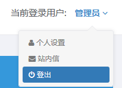2.1 设备（医疗机器人）管理
2.1.1 设备管理首页
设备管理首页主要展示三种待办事项：租期快要结束、该采集USB数据、USB数据导出错误；
1）租期快要结束：
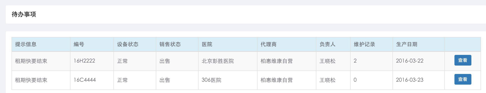图2.1.1-1 租期快要结束
租期快要结束，是指一台设备，其最新租售状态为 “出租”或“免费合作”；同时租赁结束日期和当前日期的差距在30天以内。
点击查看按钮进入该设备的详细信息界面。
新建一条设备的租售信息，使设备不处于提醒状态，比如延长租期，作废设备，卖掉设备，收回库存，提醒就会消失。
2）该采集USB数据：
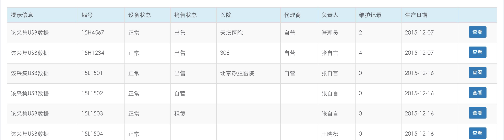图2.1.1-2 该采集USB数据
该采集USB数据，是指该设备最后一次上传数据的时间，和当前时间差距超过90天。
点击查看按钮进入该设备的详细信息界面。
正确的提交一次该设备的USB数据文件，提醒就会消失。
3）USB数据导出错误：

图2.1.1-3 USB数据导出错误
USB数据导出错误，是指一台设备最后一次成功上传USB数据后，又有了一条“USB文件损坏”的维修记录，也就是说按时间顺序，当前最新的状态是“USB文件损坏，维修中”，这样的设备，我们会在设备管理首页进行提醒。
点击查看按钮进入该设备的详细信息界面。
正确的提交一次该设备的USB数据文件，提醒就会消失。
2.1.2 新建设备
新建设备就是创建一个新的设备；
1）新建设备界面：
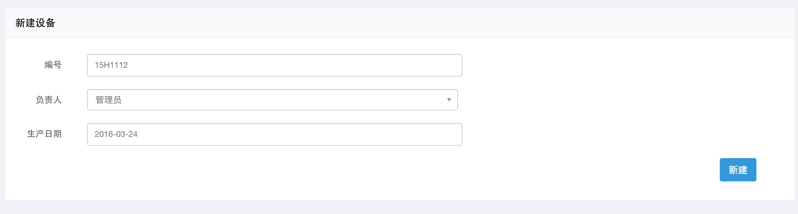图2.1.2-1 新建设备
设备编号遵循以下编码规则：
1.由大写字母和数字组成 2.编号长度为7 3.第三位必须为大写字母中A-L 4.其他位为数字新建后，如果编号已存在，则在原地提醒：
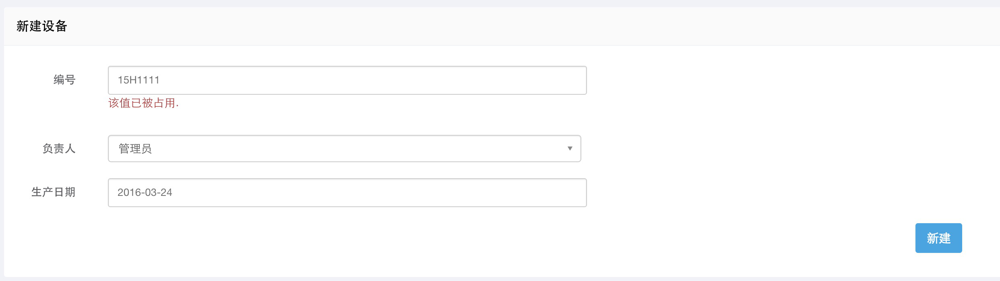图2.1.2-2 新建设备时编号已存在
负责人必须选择，如果不选择负责人，则在原地提醒。生产日期也必须填写，默认为当天时间，不填写的话则在原地提醒。
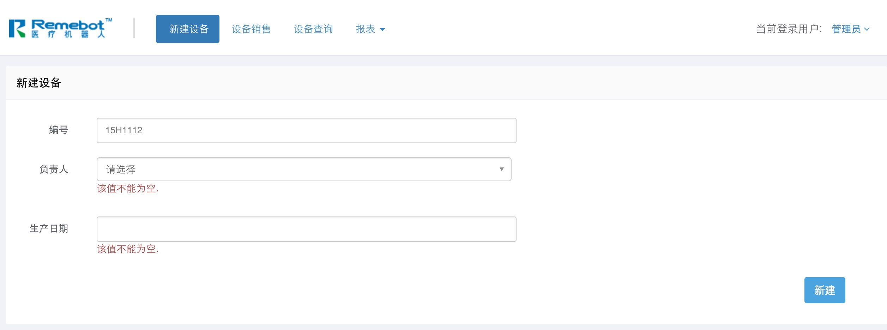图2.1.2-3 负责人或生产日期不填写会提示
当编号填写正确，负责人和生产日期都填写后，点击新建按钮。新建成功后将跳转到该设备的详情页面
2）设备详情界面：
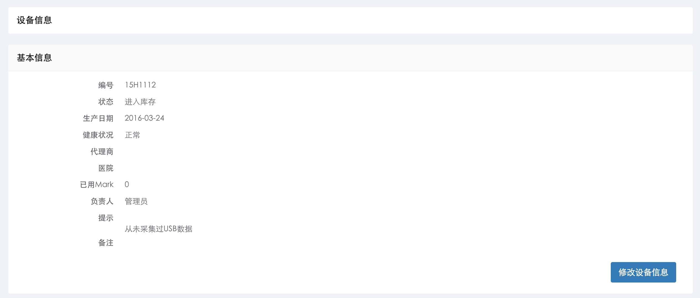图2.1.2-4 设备详情界面一
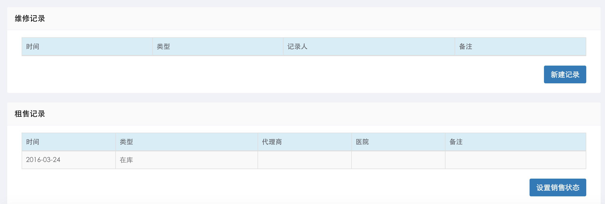图2.1.2-5 设备详情界面二
设备详情界面展示设备的基本信息，维修记录和租售记录。
基本信息包括：编号、状态、生产日期、健康状态、代理商、医院、已用Mark、负责人、提示、备注。这些信息都是根据表内容提取出来之后，计算出来的，比如“当前状态”，在租期结束前30天内开始提示还有多少天过期，距离上次USB数据采集过去90天后开始提示过去了多少天，如果这两个事件都不满足，则显示“无”。
2.1.3 设备编辑
点击修改设备信息按钮进入编辑设备信息界面。可以修改负责人（因为可能上一个负责人离职了）、生产日期、备注，其他信息不能修改。
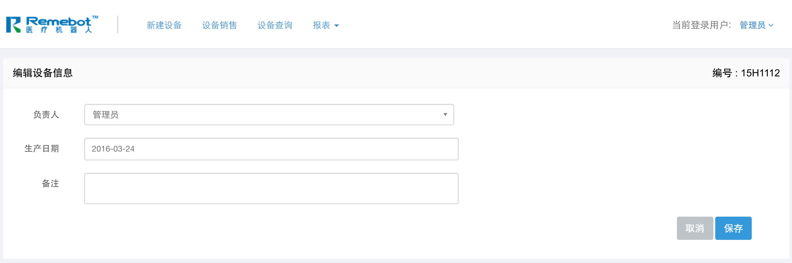图2.1.3-1 编辑设备信息界面
填写信息后点击保存按钮，将保存修改后的内容，并跳转到设备详情界面。点击取消按钮，则放弃修改操作，并返回到设备详情界面。
维修记录展示该设备所有的维修记录，并且不分页。点击新建记录按钮进入到添加设备维护信息的界面。
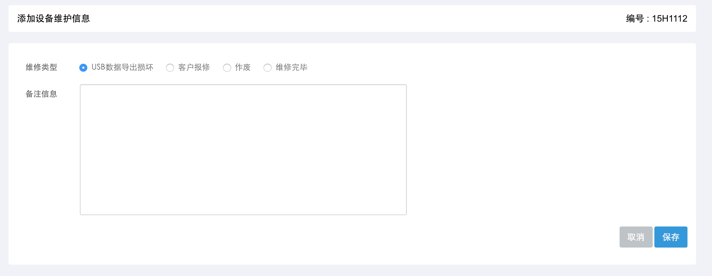图2.1.3-2 添加设备维护信息界面
维修类型有USB数据导出损坏、客户报修、作废、维修完毕等四种类型。默认类型为USB数据导出损坏，这四种类型都必须填写备注信息，如果不填备注信息，则在原地提醒。
类型是“USB数据导出错误”的时候，不改动设备的健康状态；类型是“客户报修”的时候，自动将设备健康状态改为“维修中”；类型是“作废”时，自动将设备健康状态改为“作废”；类型是“维修完毕”时，自动将设备健康状态设为“正常”。维修记录的日期和填写人，是自动填写的。
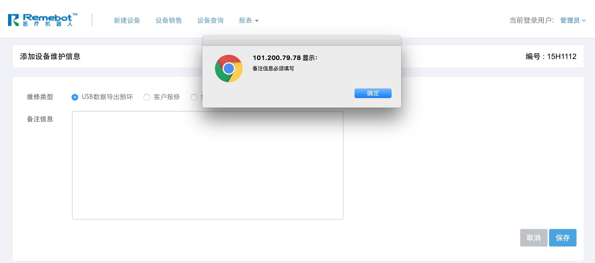图2.1.3-3 备注信息必须填写
填写信息后点击保存按钮，将保存该条设备维护记录，并跳转到设备详情界面。点击取消按钮，则放弃修改操作，并返回到设备详情界面。
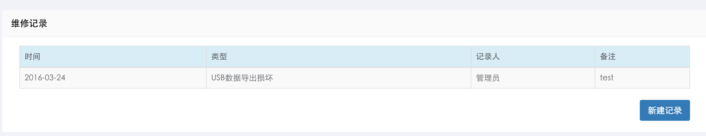图2.1.3-4 新建的维修记录
租售记录展示该设备所有的租售信息，只显示，不可以修改，设置一次租售状态，就等于增加了一条记录，不分页。点击“设备销售状态”，进入修改设备租售状态界面。
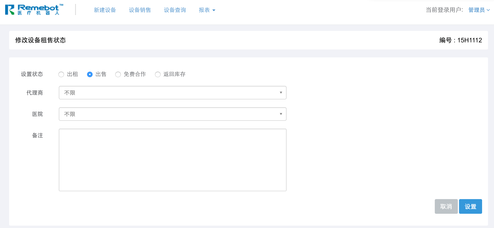图2.1.3-5 修改设备租售状态界面
设备状态有四种：出租、出售、免费合作、返回库存。免费合作全是直营，所以选择免费合作，则代理商自动选为“直营”且隐藏，默认的状态为出售，代理商和医院必须选择，如果状态设置为“返回库存”，则隐藏代理商和医院下拉列表，起租时间只有当选择“出租”和“免费合作”的时候才显示，如果上一次租售状态是出租或免费合作，而结束时间还没有到，则必须填写“备注”，而且在后面自动加上一串字符：【该操作为提前操作】。
填写信息后点击设置按钮，将保存该条设备租售记录，并跳转到设备详情界面。点击取消按钮，则放弃修改操作，并返回到设备详情界面。

图2.1.3-6 新设置的设备租售状态
2.1.4 可销售设备
设备销售是指销售状态为在库、设备状态为正常、维修状态为不限时查询出的结果。
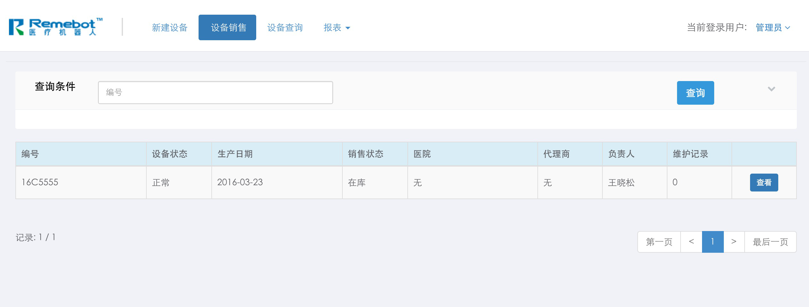图2.1.4-1 设备销售界面
设备销售界面默认查询条件面板为收缩状态，支持编号的模糊查询，点击查看按钮进入该设备的详情界面，点击下拉箭头，将展开查询条件面板。
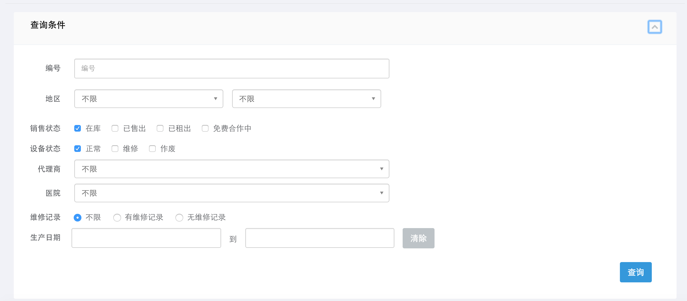图2.1.4-2 设备销售界面展开的查询条件面板
2.1.5 设备查询
设备查询界面提供对设备的编号、地区、销售状态、设备状态、代理商、医院、有无维修记录、生产日期进行查询。
查询大项条件之间是“与”的关系，如果又填写了编号又设置了地区，则只有该地区，且编号符合条件的，才会被查询出来。
本系统中所有的查询大项条件之间都是“与”的关系。
查询小项之间的关系都是“或”的关系，比如“销售状态”，如果同时选中“在库”和“已售出”，则在库的设备和已售出的设备都会被查询出来。

图2.1.5-1 设备查询界面
支持对编号进行模糊查询，比如在编号输入框输入“16”进行查询，将得到下面的结果：
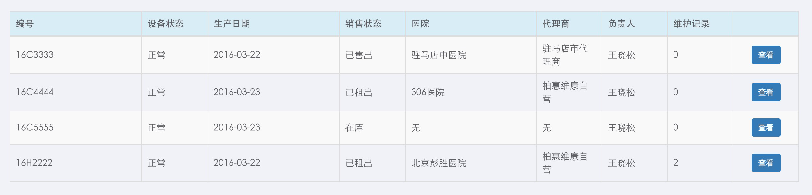图2.1.5-2 编号为16的查询结果
地区约束的是医院所在的省市地址，地区栏第一个输入框表示的是省地址，第二个输入框表示的是市地址，比如分别输入“北京”、“北京”后，将得到下面的结果：

图2.1.5-3 省市地址都为北京的查询结果
支持对销售状态的多选查询操作，当销售状态为“在库”时，将得到下面的结果：
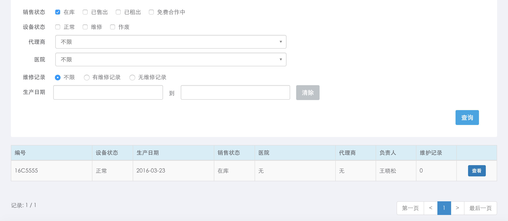图2.1.5-4 销售状态为在库的查询结果
支持对设备状态的多选查询操作，当设备状态为“正常”时，将得到下面的结果：

图2.1.5-5 设备状态为正常的查询结果
支持对系统中存在的所有的代理商进行查询，当代理商为“柏惠维康自营”时，将得到下面的结果：
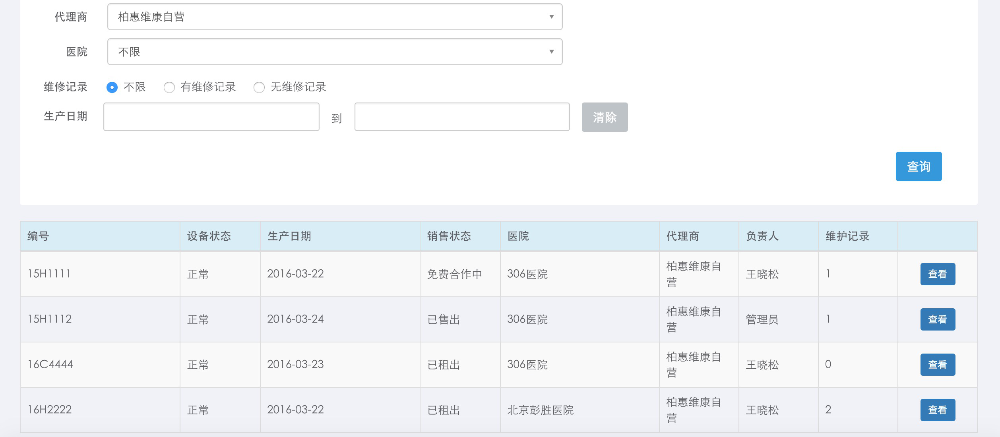图2.1.5-6 代理商为柏惠维康自营的查询结果
医院，维修记录，生产日期都类似。其中生产日期支持对时间段进行查询，第一个输入栏表示起始查询时间，第二个输入栏表示终止查询时间。
2.2 Mark管理
2.2.1 新建Mark
支持对mark的批量新建操作。
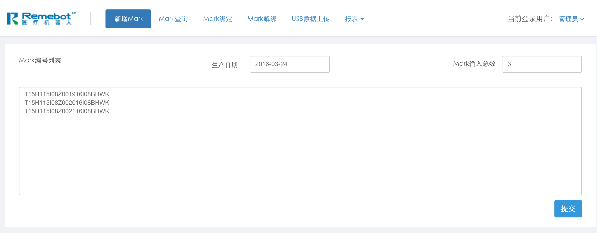图2.2.1-1 新增mark界面
1) Mark输入总数必须要与输入的mark行数相等，如果不相等将会报错：
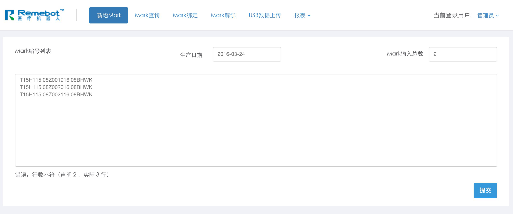图2.2.1-2 Mark输入总数与实际行数不等
2) 生产日期不允许为空，当Mark编号已存在时，再进行提交也将会报错：
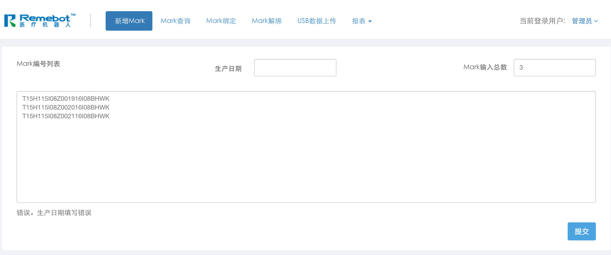图2.2.1-3 生产日期为空时会提示错误
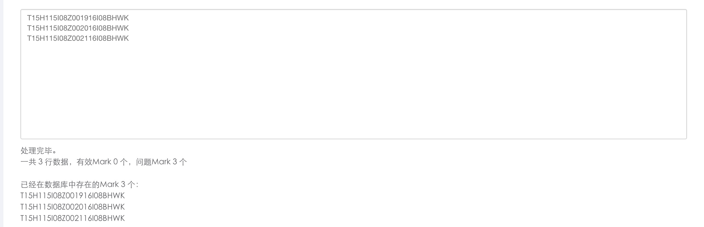图2.2.1-4 Mark编号已存在时会提示错误
3) 当生产日期不为空，Mark标号不重复，且Mark输入总数与Mark实际行数相等时，才能新增成功。点击提交按钮，成功后将显示正确添加Mark的消息：
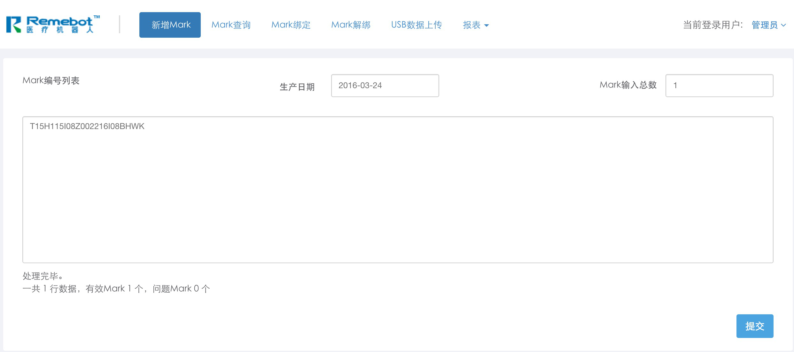图2.2.1-5 成功创建Mark
2.2.2 Mark查询
Mark查询支持对Mark的编号、Mark状态、销售状态、代理商、医院、医生、出货给代理商时间、卖出给医院时间、医生扫码时间、损坏时间、归档时间、手术时间、生产时间进行查询。
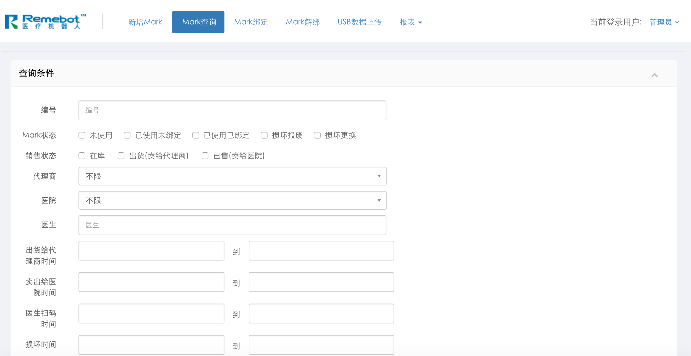图2.2.2-1 Mark查询页面
一、Mark查询页面：
1）支持对Mark编号的模糊查询，比如当输入编号为“P16C116C23Z000 ”时，查询结果如下所示：
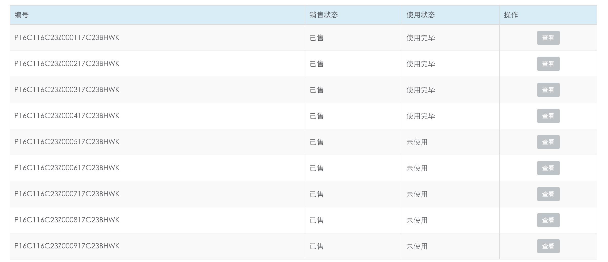图2.2.2-2 当Mark编号为“P16C116C23Z000”时的查询结果
2）Mark状态和销售状态都支持多选查询操作，当Mark状态为“未使用”，销售状态为“在库”时，查询结果如下所示：
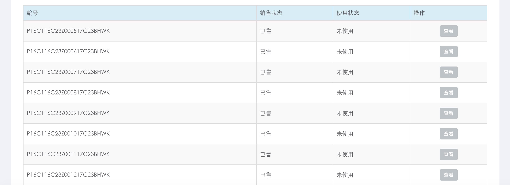图2.2.2-3 当Mark状态为“未使用”，销售状态为“在库”时的查询结果
3）代理商和医院都支持对系统存在的所有的代理商或医院进行查询，当代理商为“柏惠维康自营”，医院为“北京彭胜医院”时，查询结果如下所示：
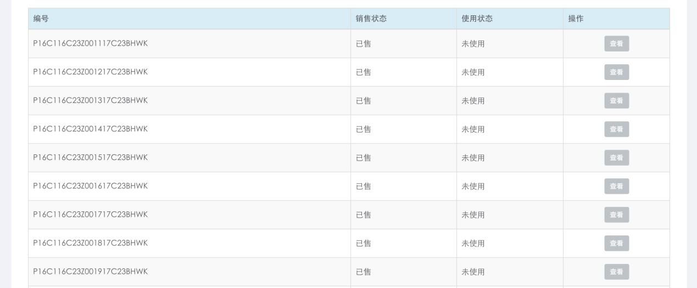图2.2.2-4 当代理商为“柏惠维康自营”，医院为“北京彭胜医院”时的查询结果
4）医生查询栏支持对系统存在的所有的医生进行查询，当医生为“赵全军”时，查询结果如下所示：
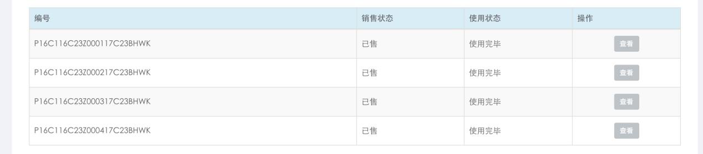图2.2.2-5当医生为“赵全军”时的查询结果
5）出货给代理商时间、卖出给医院时间、医生扫码时间、损坏时间、归档时间、手术时间、生产时间都支持对时间段进行查询，第一个输入栏表示起始查询时间，第二个输入栏表示终止查询时间。
点击查看按钮，进入该Mark的详情信息界面。
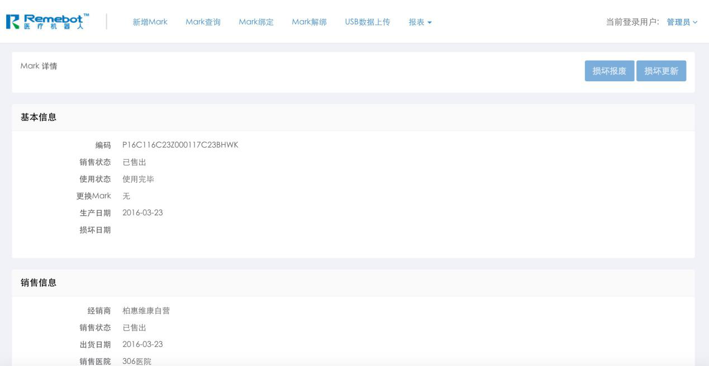图2.2.2-6 Mark详情信息界面一
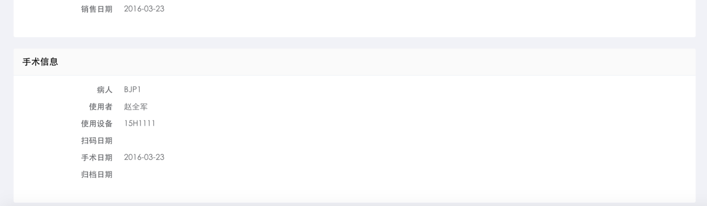图2.2.2-7 Mark详情信息界面二
二、Mark详情信息界面：
Mark详情界面显示Mark的基本信息、销售信息和手术信息，并包含绑定/解绑、损坏报废、损坏更新等功能。
1）Mark的基本信息
Mark的基本信息栏包括Mark的编码、销售状态、使用状态、更换Mark、生产日期、损坏日期等信息。
2）Mark的销售信息：
Mark的销售信息包括Mark的经销商、销售状态、出货日期、销售医院、销售日期等信息。
3）Mark的手术信息：
Mark的手术信息包括Mark的病人、使用者、使用设备、扫码日期、手术日期、归档日期等信息。
4）绑定：
只有在未绑定的Mark详情界面，才会出现绑定按钮。点击绑定按钮，将弹出下图所示的弹出框：
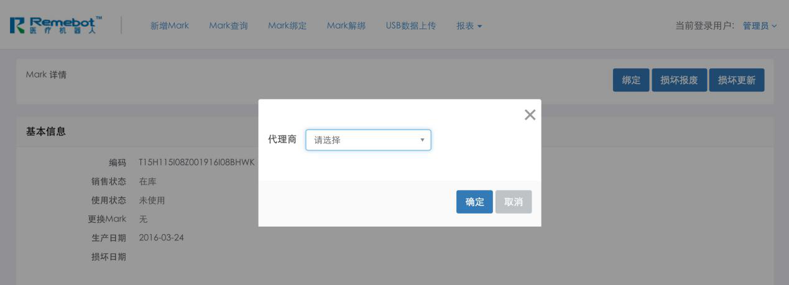图2.2.2-8 点击绑定按钮后的弹出框
选择代理商，如果不选择代理商将会出现提示，点击确定后弹出框消息，绑定按钮变成解绑按钮，同时基本信息、销售信息、手术信息都有所变化。点击取消按钮将取消本次操作。
绑定的实际意义是将一个Mark出货给一个代理商。
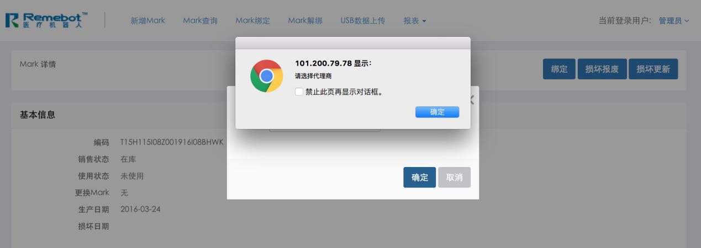图2.2.2-9 不选择代理商，将出现提示
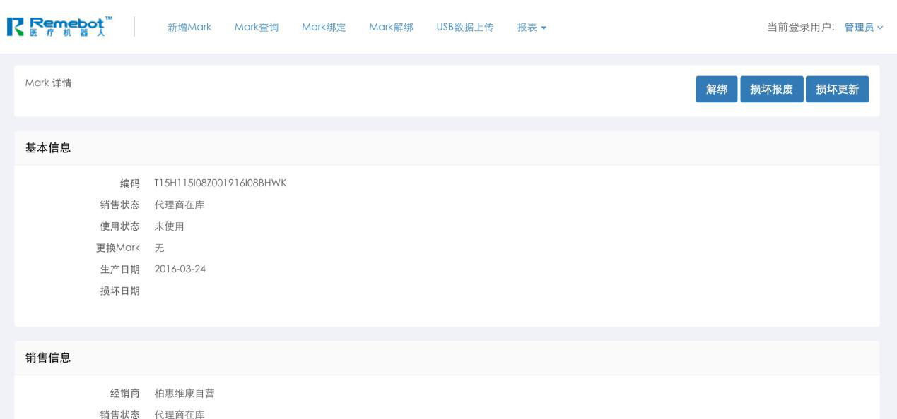图2.2.2-10 绑定成功后的Mark详情界面
5）解绑：
只有在绑定的Mark详情界面，才会出现解绑按钮。点击解绑按钮，将弹出下图所示的弹出框：
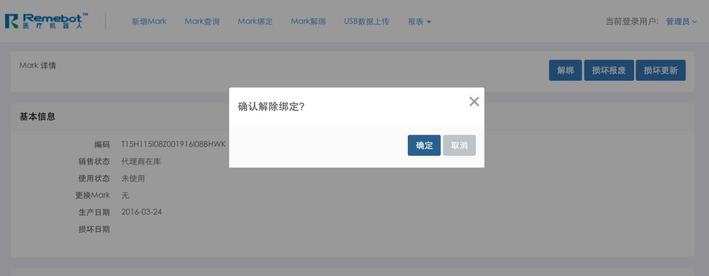图2.2.2-11 点击解绑按钮后的弹出框
点击确定按钮将会对该Mark进行解绑操作。解绑成功后解绑按钮变成绑定按钮，同时基本信息、销售信息、手术信息都有所变化。点击取消按钮将取消本次操作。
解绑操作通常是将一个Mark退回生产商。
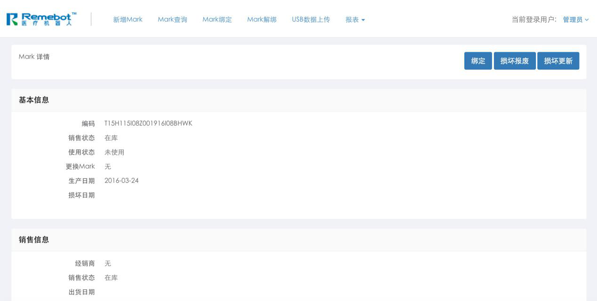图2.2.2-12 解绑成功后的Mark详情界面
6）损坏报废：
点击损坏报废按钮，将会弹出下图所示的弹出框：
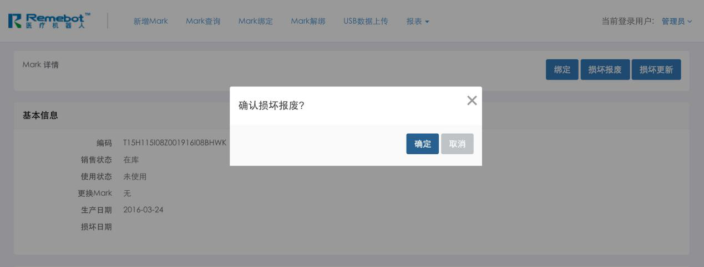图2.2.2-13点击损坏报废按钮后的弹出框
点击确定按钮将对该Mark进行损坏报废操作。损坏报废成功后损坏报废和损坏更新按钮均变成灰色，同时基本信息栏的使用状态变成损坏报废。点击取消按钮将取消本次操作。
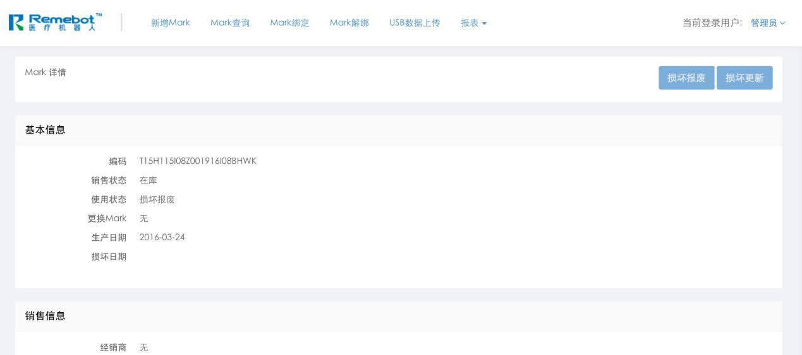图2.2.2-14 损坏报废成功后的Mark详情界面
7）损坏更新：
点击损坏更新按钮，将弹出下图所示的弹出框：
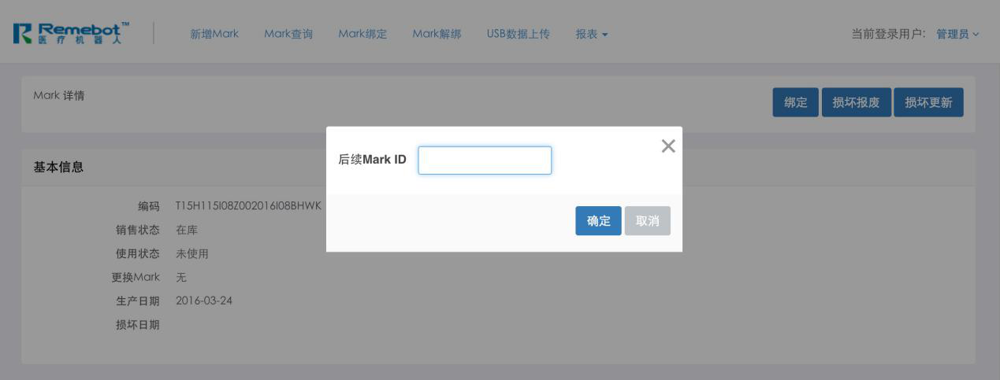图2.2.2-15点击损坏更新按钮后的弹出框
后续Mark ID输入框需要填写一个存在的Mark，如果填写的Mark不存在，将提示mark输入错误。
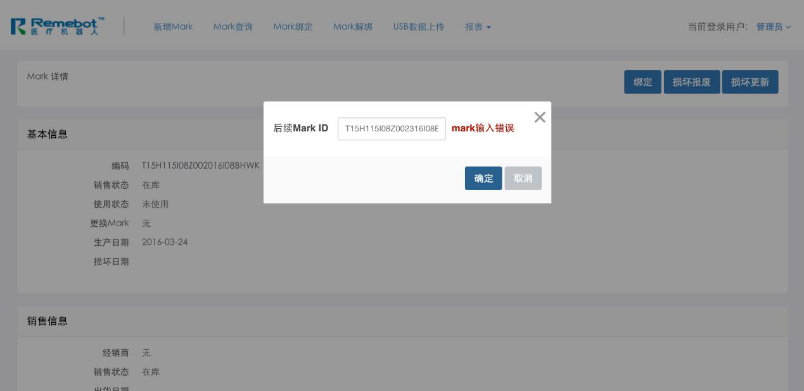图2.2.2-16 mark不存在的提示
填写了一个存在的Mark，点击确定按钮后损坏报废和损坏更新按钮均变成灰色，同时基本信息栏的使用状态变成损坏更新。点击取消按钮将取消本次操作。
点击取消按钮将取消本次操作
2.2.3 Mark绑定
Mark绑定界面支持对Mark批量绑定的操作。
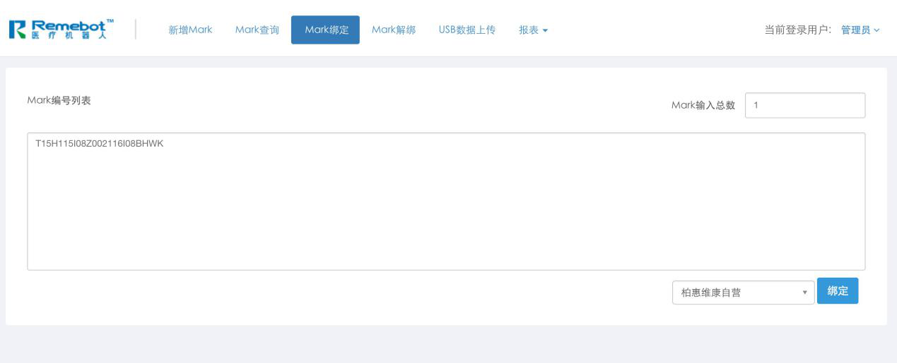图2.2.3-1 Mark绑定界面
当输入的Mark编号不存在时，将会提示Mark不存在，无法绑定：
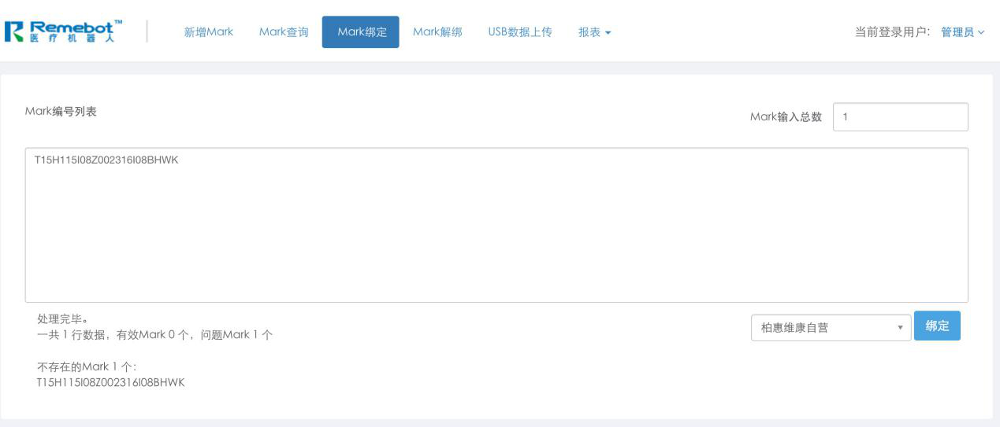图2.2.3-2 Mark编号不存在
当Mark状态为损坏报废或者损坏更新时，将会提示Mark状态不对，无法绑定：

图2.2.3-3 当Mark状态为损坏报废或损坏更新时
Mark输入总数与Mark编号列表的行数必须要相等，且代理商的选择框不能为空，Mark要存在，且状态不为损坏报废或者损坏更新，才能进行绑定操作。点击绑定按钮后，将会出现一个确认提示，如下图所示：
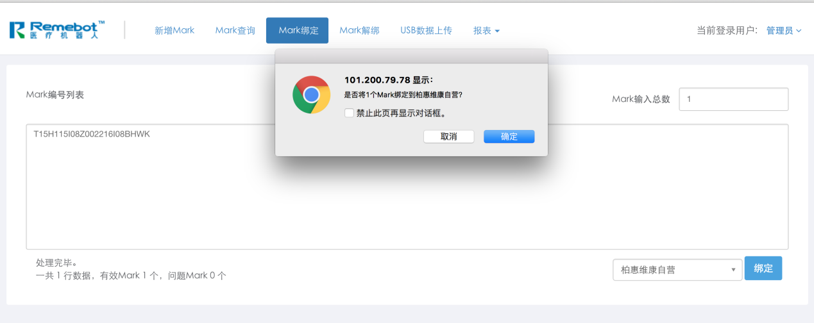图2.2.3-4 Mark绑定时出现的确认框
点击确定按钮后，将显示Mark绑定成功。点击取消按钮，将取消此次绑定操作。
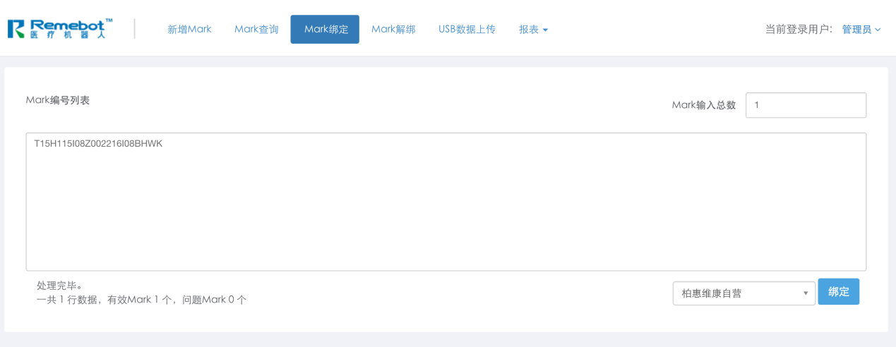图2.2.3-5 Mark绑定成功的提示信息
绑定成功会给相关的代理商发送一封站内信件，同时也会向代理商邮箱发送mark清单，其中会附上绑定成功的Mark清单，供代理商保存备询。
2.2.4 Mark解绑
Mark解绑界面支持对Mark批量解绑的操作

图2.2.4-1 Mark解绑界面
当输入的Mark编号不存在时，将会提示Mark不存在，无法进行解绑操作：
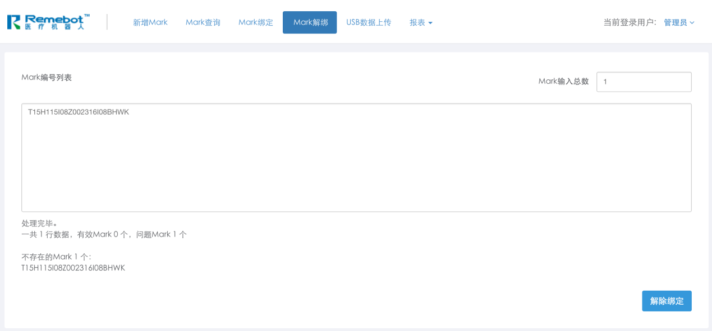图2.2.4-2 Mark编号不存在
当Mark状态为损坏报废或者损坏更新时，将会提示Mark状态不对，无法进行解绑操作：
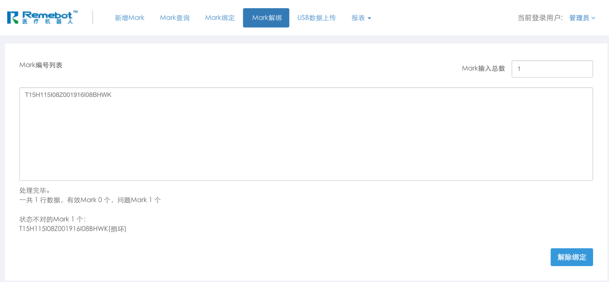图2.2.4-3 当Mark状态为损坏报废或损坏更新时
当Mark状态为未绑定时，将会提示Mark未绑定，无法进行解绑操作：
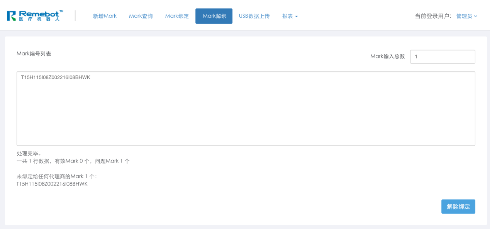图2.2.4-4 当Mark状态为未绑定时
Mark输入总数与Mark编号列表的行数必须要相等， Mark要存在，且状态不为损坏报废或者损坏更新或者未绑定，才能进行解绑操作。点击解绑按钮后，将会出现一个确认提示，如下图所示：
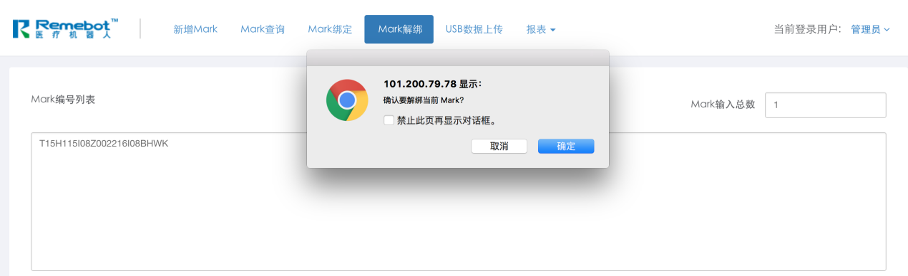图2.2.4-5 Mark解绑时出现的确认框
点击确定按钮后，将显示Mark解绑成功。点击取消按钮，将取消此次解绑操作。
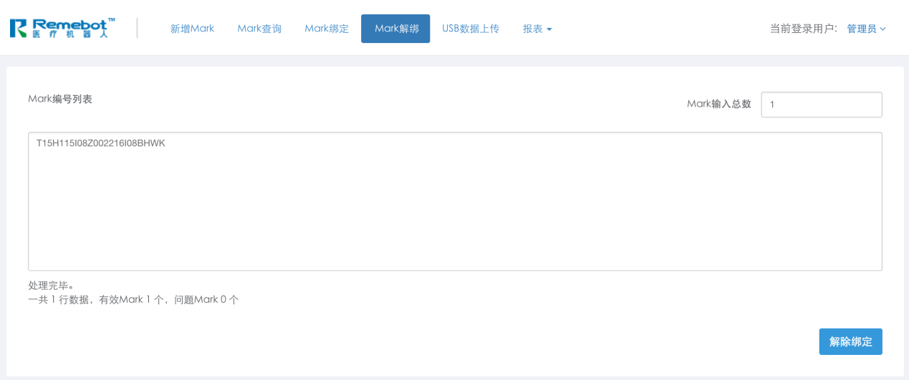图2.2.4-6 Mark解绑成功后的提示信息
2.2.5 USB数据上传
USB数据上传功能支持上传包含USB数据的文件。支持USB数据文件加密，密码的设置在系统设置中，密码的设置应用到整个系统，想上传一个不同密码的USB文件，必须请有系统设置权限的用户来操作，先改变密码，上传数据后再将密码改回来。
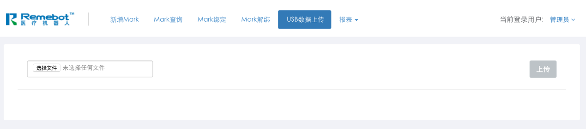图2.2.5-1 USB数据上传界面
上传成功后的显示信息：
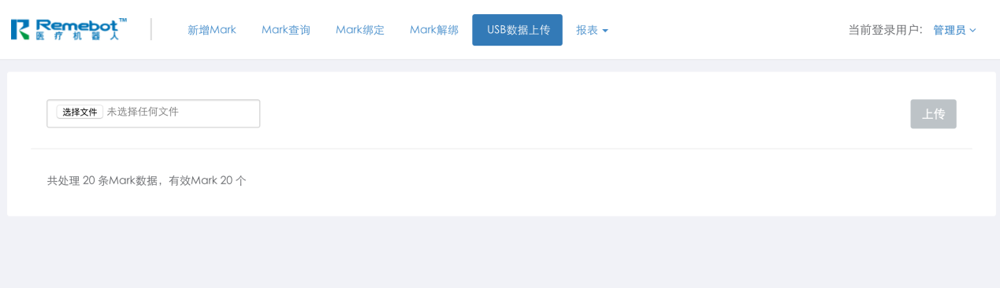图2.2.5-2 USB数据上传成功后的显示信息
2.3 代理商管理
2.3.1 代理商管理首页
代理商管理首页显示代理快到期和新注册这两种状态的代理商。
新注册的列表显示的是最近10天内注册且没有获得代理权的账号；
代理权快到期显示最近N天内代理权即将过期的代理商，N可以在系统配置中设置。
图2.3.1-1 代理商管理首页界面
2.3.2 代理商查看与编辑
点击查看按钮进入代理商详情信息界面。
代理商详情信息界面包括展示代理商的名称、代理商的基本信息、代理商的销售情况、代理商的相关医院、代理商的相关设备等信息，同时还包括禁用/启用功能。：
图2.3.1-2 代理商详情信息界面一
图2.3.1-2 代理商详情信息界面二
1）代理商基本信息包含代理商名称、代理商登录名、代理商所在的地区、代理商的联系人、电话、Email、状态、代理权、备注等信息。
2）代理商销售情况包含累计销售设备、累计出租设备、累计销售Mark、库存Mark、累计损坏mark、累计更新mark等信息。
3）相关医院显示与该代理商相关联的医院。
4）相关设备显示与该代理商相关联的设备。
5）禁用：
禁用代理商，将禁止代理商登录，但是可以查看代理商的历史信息。
点击禁用按钮后，将出现确认禁用弹出框。如下图所示：
图2.3.1-4 禁用代理商后出现的弹出框
点击确定按钮后，代理商禁用成功。代理商详情界面的禁用按钮变成启用按钮，基本信息中的状态变成禁用。如下图所示：
图2.3.1-5 禁用代理商成功后的界面
6）启用：
代理商启用，将恢复代理商登录的权力。
点击启用按钮后，将出现确认启用弹出框。如下图所示：
图2.3.1-6 启用代理商后出现的弹出框
点击确定按钮后，代理商启用成功。代理商详情界面的启用按钮变成禁用按钮，基本信息中的状态变成禁用。如下图所示：
图2.3.1-7 启用代理商成功后的界面
8）修改基本信息：
修改代理商基本信息界面包含重置密码、修改代理商期限、修改内部备忘。
图2.3.1-8 修改代理商基本信息的界面
重置密码为空时表示不重置密码。点击确定按钮将成功修改代理商信息，点击取消按钮则取消本次修改代理商信息的操作。点击这两个按钮后，都返回到代理商详情信息界面。
“内部备忘”信息，是公司人员对代理商的一些备注信息，代理商自己登录到系统里是看不到的。
2.3.3 代理商查询
代理商查询界面支持对代理商的编号、地区、名称、联系人姓名进行查询。
图2.3.3-1 代理商查询的界面
代理商的编号支持模糊查询，当输入编号为1时，查询结果如下图所示：
图2.3.3-2当编号为1时的查询结果
当地区栏输入“北京”，“北京”时的查询结果如下图所示：
图2.3.3-3当地区栏输入“北京”，“北京”时的查询结果
当名称为“柏惠维康自营”时的查询结果如下图所示：
图2.3.3-4当名称为“柏惠维康自营”时的查询结果
联系人姓名支持模糊查询，当联系人姓名为“柏”时，查询结果如下图所示：
图2.3.3-5当联系人姓名为“柏”时的查询结果
点击查看按钮进入代理商详情信息界面。
2.4 医院管理
2.4.1 新建医院
一、新建医院界面：
新建医院需要填写医院名称、所在省市、详细地址、备注。
图2.4.1-1 新建医院界面
医院名称不能重复，如果出现重复，将会显示医院名字已存在的信息，如下图所示：
图2.4.1-2 医院名称重复后的提示信息
所在省市不能为空，详细地址和备注允许为空。点击提交按钮进入医院详细信息页面。
二、医院详细信息页面：
医院详细信息页面主要显示医院的名称、医院的科室、医院的医生、医院的相关设备。其中涉及到新建科室和新建医生的操作。
图2.4.1-3 医院详细信息页面
2.4.2 医院查询
医院查询支持对医院的编号、地区、名称、医生进行查询。
图2.4.2-1医院查询界面
编号、名称、医生均为模糊查询。
点击“编辑”可以修改医院的名称、所在省市、详细地址和备注，点击提交按钮跳转到医院详情界面
可以修改医院的名称、所在省市、详细地址和备注，点击提交按钮跳转到医院详情界面
图2.4.2-2医院编辑界面
点击备注栏的图标，将弹出显示备注的弹出框，如下图所示：
图2.4.2-3医院备注信息弹出框
2.4.3 科室/医生管理
在医院列表点击“管理科室/医生”，会进入科室和医生管理功能，科室的管理必须在一个医院下操作，而医生的管理在这里是和医院相关的，在稍后的独立医生管理界面，可以统一管理。
1）新建科室：
点击新建科室按钮，进入新建科室界面，登录名自动生成，不能重复，可手动更改
图2.4.1-4 新建科室页面
科室名称、登录名、密码为必填项，其中密码需要包括字母和数字，否则将会提示错误，备注为选填项。点击确定按钮将成功添加此科室，点击取消按钮将取消本次操作，均跳转到医院详情的界面。
图2.4.1-5 成功添加科室后的医院详情界面
2）删除科室
点击删除按钮将弹出确认删除弹出框，点击确定将成功删除该科室，点击取消按钮表示取消此次删除操作。
图2.4.1-6 点击删除按钮后的弹出框
3）编辑科室
编辑科室不能修改登录名，科室名、密码和备注都可以修改，密码为空表示不修改密码。点击确定按钮将成功修改此科室，点击取消按钮将取消本次操作，点击删除该科室将删除此科室，均跳转到医院详情的界面。
图2.4.1-7 编辑科室界面
4）新建医生
新建医生需要填写姓名、性别、所在医院、科室、级别、职务、状态、电话、Email等信息。

图2.4.1-8 新建医生界面
姓名、所在科室、级别、状态、电话、Email都不能为空，状态为默认选择，且不可更改，医院默认为当前医院，性别默认为男。点击确定按钮，成功添加医生后返回到医院详情页面。
图2.4.1-9成功添加医生后的医院详情界面
点击查看按钮进入医生详情界面。
2.5 医生管理
2.5.1 新建医生
这个新建医生界面与前面的医院详情中的新建医生只有一个区别：所在医院一个默认为空，一个默认为当前医院。
图2.5.1-1 新建医生界面
姓名、所在科室、级别、状态、电话、Email都不能为空，状态为默认选择，且不可更改，医院默认为空，性别默认为男。点击确定按钮，成功添加医生后返回到医院详情页面。
2.5.2 医生查询
医生查询界面支持对医院、姓名、电话进行查询。医院为选择框，只能选择系统中存在的医院，姓名和电话都支持模糊查询。
图2.5.2-1 医生查询界面
点击查看按钮进入医生详情页面。
2.5.3 医生查看与编辑
医生详情界面包含医生的基本信息和Mark使用统计，并包括修改医生的基本信息功能。
图2.5.2-2 医生详情界面一
图2.5.2-3 医生详情界面二
1）基本信息包括姓名、医院、科室、性别、职务、登记、授权码、电话、Email、状态、添加时间等信息。
2）Mark使用统计包括累计使用Mark总数、已归档Mark总数、未归档Mark总数。
3）修改
图2.5.2-4 医生修改界面
医生的识别码、医院、科室、状态都不能修改，姓名、性别、级别、职务、电话和Email都可以修改。
状态不能修改是因为状态的设置是自动的。新建的医生都是“待培训”状态，培训完成后，对医生进行修改，此时即可以输入识别码——也只有此时可以修改识别码——输入后状态自动变为“培训完毕未绑定微信”。待用户在微信端登录后，状态自动变为“已绑定微信”，如果将用户禁用，则状态自动变为“禁用”。
医院和科室不能修改是系统就这样设定的，如果医生更换了科室或者更换了医院，需要另外创建一个账号，并将旧账号禁用。
点击禁用按钮将禁用该医生，点击确定按钮将保存对该医生信息的修改，均返回到医生详情界面。禁用后的医生再次进入修改界面，禁用按钮变成了恢复按钮，点击恢复按钮将重新启用该医生。如下图所示：
图2.5.2-5 禁用后的医生修改界面
2.6 系统工具
2.6.1 员工管理
员工管理包含对在职员工、离职员工的查询功能，新建用户功能，编辑用户功能，设为离职功能。
图2.6.1-1 员工管理界面
1）新建用户
新建用户需要填写登录名、密码、真实姓名、电话、Email等信息，并可以为其赋予相应的权限。点击保存按钮将新建该用户，点击取消按钮将取消本次新建用户的操作。
图2.6.1-2 新建用户界面
2）编辑
编辑界面登录名不能修改，密码、真实姓名、电话和Email都可以修改，权限也可以重新赋予。点击保存按钮将新建该用户，点击取消按钮将取消本次新建用户的操作。
图2.6.1-3 编辑用户界面
3）设为离职
点击设为离职按钮，见弹出下图所示的弹出框：
图2.6.1-3 设为离职
点击确定按钮，将该用户成功设为离职，点击取消按钮将取消本次操作。
图2.6.1-3 设为离职后的用户
设为离职后，用户设为离职按钮变成恢复按钮。点击恢复按钮，将用户设为在职状态。
2.6.2 日志查看
日志查看界面支持对日志进行查询和筛选操作
图2.6.2-1 日志查看界面
填写查询条件以及筛选词，然后单击查看按钮，得到下图所示的结果：
图2.6.2-2 包含查询条件和筛选词的日志查看界面
2.6.3 系统配置
系统配置包含用户配置、系统配置和邮件服务器配置。修改后点击保存按钮将会保存该次修改。
图2.6.3-1 系统配置界面一
此处的配置主要用于提示和提醒功能。
登录保存时间，是指用户用浏览器打开系统，登录之后，多长时间没有操作或者关闭浏览器，会被系统认为已经断开，已经断开的用户，点击任何功能，会重新跳回登陆页面。
每页列表行数是指定，在可以翻页的各种返回列表的查询界面，一页最多显示多少行。
代理商结束时间在多少天内，则显示“即将过期”标识。这个天数设定后，代理商代理权减去当前日期小于这个天数，则会在代理商管理首页显示提醒信息。
租期结束时间在多少天内，则显示“租期快要结束”标识。这个天数设定后，设备的租赁日期减去当前日期小于这个天数，则会在设备管理首页显示提醒信息。
医院的Mark存量在多少以内，会提示管理员。这个数量设定之后，每天早上9点系统会扫描所有医院的Mark存量，如果低于这个数量，就给系统默认管理员（ID为1的用户）发送一封站内信件，提醒他注意。当数量为0的时候，不再提醒，默认为该医院将不再使用我们的设备；或者医院补货超过提醒值，也不再提醒。
设备租赁到期，提前多少天发送站内信通知。这个天数设定之后，每天早上9点系统会扫描所有处于正常租赁状态的设备，如果发现租赁到期日期减去当前日期小于这个天数，就会给系统默认管理员发送一封站内信件，提醒他注意，直到提醒条件失效，比如彻底关闭了代理商的代理权或者续签了代理权。
多少天提醒一次该采集USB数据。这个天数设定之后，每天早上9点系统会扫描所有设备上一次上传USB数据的时间，如果减去当前日期大于这个天数，就会给系统默认管理员发送一封站内信件，提醒他注意。
USB数据当前密码。当前上传USB数据时，会用这个密码来解密。
邮件服务器配置，当前只支持SMTP协议，且必须通过用户名和密码登录。
图2.6.3-1 系统配置界面二
2.7个人设置
个人设置界面包含修改密码和修改个人信息两个功能。当旧密码和新密码不为空，且旧密码正确，新密码与再输一遍相同时，才能进行密码修改的操作。
图2.7 个人设置界面
2.8站内信件
站内信件模块包含对接收的消息和发送的消息进行查询，同时支持发送站内信的功能。
图2.8 站内信件界面
1）发送站内信
支持对代理商、医生、员工三种角色发送站内信。选择发送的对象后，填写相关的内容，点击发送按钮即可，完成后返回到站内信件界面。
图2.8-2 发送站内信界面
站内信件的收发原则是：
任何站内信都只有接受者能够看到，且接受者一定能看到，不需要额外权限。 代理商只能发送给系统默认管理员 员工可以发给其他员工 系统默认管理员可以发给员工，代理商，或者医生 医生不可以发送和回复消息。其他角色可以根据以上规则发送新消息，也可以回复发送给自己的消息。